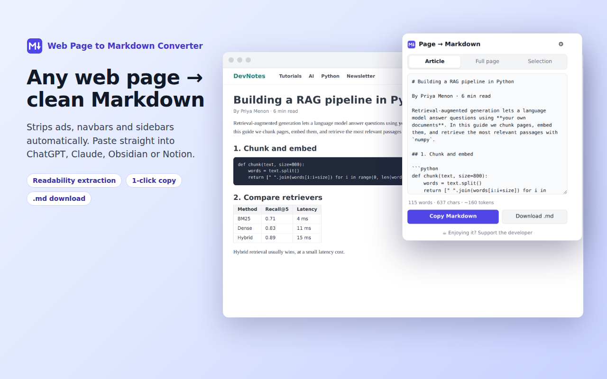
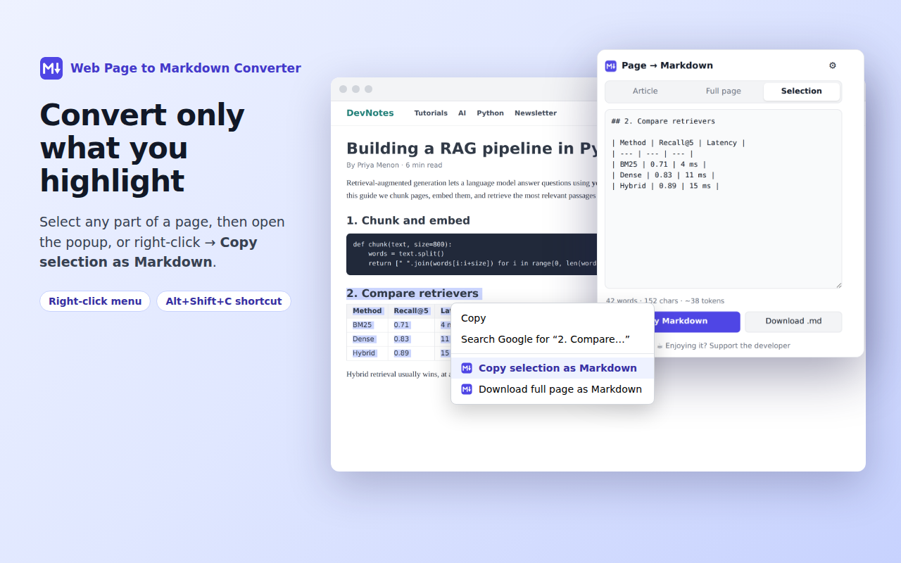

Turn any web page, article or highlighted text into clean Markdown in one click, ready for ChatGPT, Claude, Obsidian, Notion and GitHub. Everything runs locally in your browser.

Removes ads, menus, sidebars, cookie banners and comments, so you only keep the real content.
Code blocks keep language tags like ```python. HTML tables become GitHub-style Markdown tables.
Highlight part of a page and convert just that, from the popup or the right-click menu.
Optional YAML front matter (title, source, author, date) and one-click .md download.
Live word, character and token estimate, so you know what fits in your prompt.
No servers, no tracking, no account. The page never leaves your browser.
Alt+Shift+M: open the converter
Alt+Shift+C: copy the selection, or the article if nothing is selected
Change them at chrome://extensions/shortcuts.

The popup closes when you click the page, so highlight the text first, then open the extension. It will switch to Selection automatically. You can also right-click the highlighted text and choose "Copy selection as Markdown".
Chrome blocks all extensions on its own pages (chrome:// pages, the Chrome Web Store, the New Tab page) and on built-in PDF viewers. On regular websites it should work. If a page fails, please report it with the URL.
Article mode uses a readability algorithm to drop page clutter, and it can occasionally be too aggressive. Switch to Full page to convert everything, or highlight the part you need and use Selection.
Yes. The extension converts what is already displayed in your browser, so any page you can see can be converted, and nothing is sent anywhere.
Click the ⚙ gear in the popup to choose image and link style, ``` or ~~~ code fences, bullet character, title heading and YAML front matter. Settings are saved automatically.
No. There are no analytics, no servers and no accounts. Only your formatting preferences are saved, in Chrome's own sync storage. See the privacy policy.
For security, Chrome only lets the extension read frames from the same website as the page. For embedded content from another site, right-click inside that frame and use "Copy selection as Markdown".
Open an issue on GitHub. Please include the page URL, what you expected and what happened.
Prefer email? Write to
satish.jaiswal.aum@gmail.com
I usually reply within a few days.
The extension is free, with no ads and no tracking. If it saves you time, a small tip helps keep it maintained. Thank you! 🙏
☕ Tip via Razorpay (UPI · Cards · Netbanking)